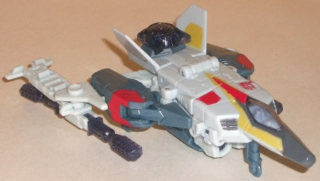 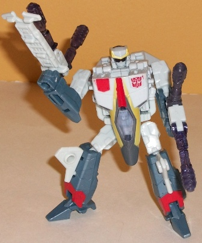
Size : Scout
Difficulty of Transformation : Easy
Color Scheme : Milky off-white, milky dull grayish blue, transparent greyish purple, and some light red, pale metallic gold, and dark gray
Rating : 9.1
Allegiances
: Autobot
Set Price
: $30 U.S.
Set Contains
: Airazor, Air Raid,
Fireflight, Silverbolt, Skydive, and Energon stars & weapons
(NOTE: Because this is set a repaint, this
is not a full-blown review. This mainly covers any changes made to the
set and the color scheme, and merely compares it to the various Energon
Superion Maximus components. For a review on Treadshot, the mold used for
Airazor and Air Raid, go
here
. For a review
on Sky Shadow, the mold used for Fireflight and Skydive, go
here
.
For a review on Storm Jet, the mold used for Silverbolt, and the combined
gestalt form, go
here
.)
 Airazor
Airazor
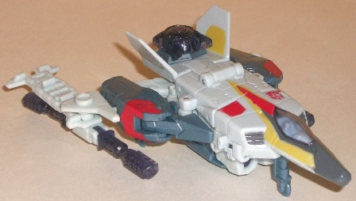
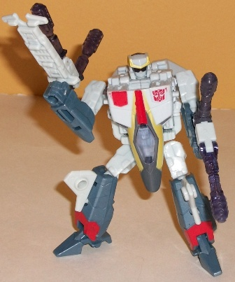
Size
: Scout
Difficulty of Transformation
: Easy
Color Scheme
: Milky off-white, milky
dull grayish blue, transparent greyish purple, and some light red, pale
metallic gold, and dark gray
Rating
: 9.1
Airazor (name replacement
for Slingshot from the original G1 Aerialbots, whom they apparently couldn't
get the name rights to) has a color scheme pretty reminiscient of the original
G1 Aerialbots, but like some of the others in this set, it's been modified
a bit to be more eye-catching. The traditional Aerialbot "white and red"
is still there, but the milky dull grayish blue is not a secondary color
and looks quite good against the white-- it serves as a nice darker contrast
color. The couple of light red paint apps also look great, though I'm not
too fond of the pale metallic gold used. It's too hard to see against the
off-white, and just seems to be a wasted oppportunity. The transparent
plastic used for Airazor is kind of an ugly "dirty" greyish purple, and
is just rather blah. As far as paint apps go, Airazor could use some more
paint on his arms, but other than that they're pretty varied, with some
nice red and/or gold stripes and the like on pretty much every major plastic
part on the toy.
Airazor's nosecone tip
has been dulled considerably, probably because of more stringent safety
laws. Other than that, he has no mold changes from this mold's previous
versions.
Overall Airazor has
a nice light color scheme to offset the other three limbs' slightly darker
schemes, and looks quite nice overall, transparent plastic aside. If only
the gold were a bit bolder, I think this really could've been the winner
of the set when it came to color schemes.
 Air
Raid
Air
Raid
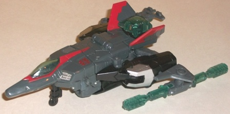
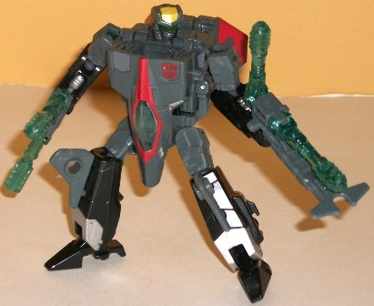
Size
: Scout
Difficulty of Transformation
: Easy
Color Scheme
: Dark greenish gray,
black, transparent light bluish green, and some light red, pale metallic
gold, and silver
Rating
: 9.2
Like his G1 version,
Air Raid has a darker color scheme, but unlike his G1 version, it's not
ALL black-- black is actually a more secondary color this time around,
with a nice greenish gray taking center stage. It looks fairly good, but
the paint apps are what really spice this toy up and keep it from looking
too boring-- the light red stripes on the wings and around the cockpit
look REALLY nice against that gray, and the silver paint apps also look
fantastic against the black. The transparent plastic is also a considerably
nicer-looking color than on Airazor, what with it being a nice blue-green
that really complements the gray and black quite nicely, in my opinion.
He doesn't have quite as much of a color variety as Airazor, though what
colors he does have are put to good use without there being any large area
that's one sole color. (That said, like Airazor, he could use some paint
apps on his arms.) I also like the bit of gold on his forehead that's used
nowhere else on the figure-- it makes it stand out a bit more in robot
mode.
Air Raid has the same
duller nosecone that Airazor has, but otherwise he has no mold changes.
I think that, despite
an overall duller color scheme, Air Raid slightly beats Airazor out in
the color scheme department, due to how great the silver and light red
complement his base colors and that he has a rather pretty shade of transparent
plastic.
 Fireflight
Fireflight
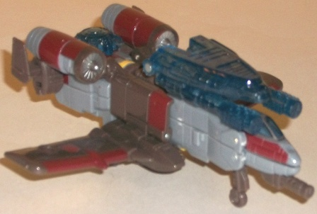
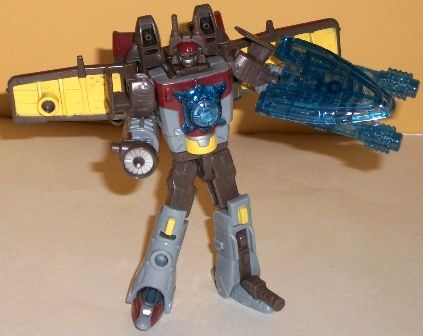
Size:
Scout
Difficulty of Transformation
: Medium
Color Scheme
: Moderately light gray,
transparent dark blue, dull brownish gray, yellow, dull brick red, and
some silver
Rating
: 9.0
Fireflight looks nothing
like his G1 counterpart other than having an aircraft alternate mode, but
it still says "Fireflight". The brick red, combined with the dull brown,
looks a bit "fiery", like something that's already been burned and just
has some dull embers still glowing among the ashes. The light gray serves
as a nice contrast color to keep the overall color scheme from looking
too dull, though I'm not a fan of the transparent dark blue. It's not a
bad color by any means, but since for this combiner we're forgoing giving
every limb the same color of transparent plastic, I really would've liked
a fiery orange or red transparent plastic instead to give Fireflight even
more of a "fire" feel. Dark blue just seems to contradict the feel the
rest of his color scheme gives off. The paint apps on the toy keep things
pretty fresh, though, as there's no large part of Fireflight that doesn't
have a paint app or two on itl. The silver used for the engines and around
the cockpit looks particularly good, and the yellow-- mostly used on the
underside of the wings, which is more visible in robot mode-- helps with
the whole "fiery" thing.
No mold changes have
been made to RotF Fireflight.
Fireflight is the best-colored
individual mold of the set, in my opinion, with most of his colors going
quite well with his name. The dark transparent blue plastic is the only
part that I don't like, given that it contradicts the theme set by the
rest of the color scheme.
 Skydive
Skydive
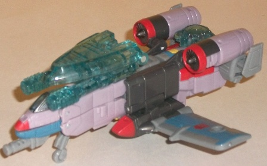
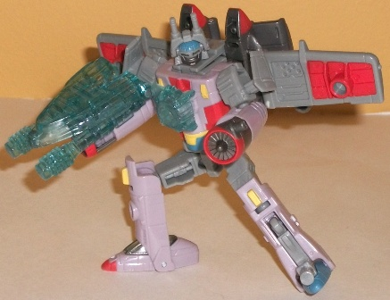
Size:
Scout
Difficulty of Transformation
: Medium
Color Scheme
: Pale light pinkish
lavender, light gray, transparent light blue, dull metallic gunmetal gray,
and some pale light sky blue, yellow, and light red
Rating
: 8.5
Skydive has a considerably
lighter color scheme than his mold-mate Fireflight, though also like Fireflight
he bears no resemblance to his G1 form other than being an aircraft. Most
of the colors look good-- the light grayish blue combined with the light
sky blue gives off a pretty cool effect, and is certainly appropriate for
an aircraft. The transparent light blue, unlike with Fireflight, really
complements the color scheme, and the gunmetal gray bits on the turbines
and main body of the plane are a really nice metalic shade and serve as
a nice dark contrast color. THe light red bits also help to liven up the
colors a bit, of which Skydive certainly has plenty. The yellow also is
a nice accent color, but.... using a pinkish lavender for such a large
portion of the toy? Really? Since when are planes lavender-pink? It's just
an oddly girly color for a boys' toyline, and looks out-of-place when compared
to the other Aerialbots. He does have quite a lot of paint apps and colors
for a scout, though (in a good way, he's not too busy), so there's that.
No mold changes have
been made to RotF Skydive.
Skydive is a nice mold,
and most of his colors are good-- I particularly like the blue. But that
lavender-pink really just looks off and ruins a lot of the color scheme,
making him color-wise my least favorite of the set.
 Silverbolt
Silverbolt
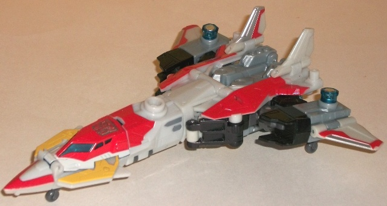
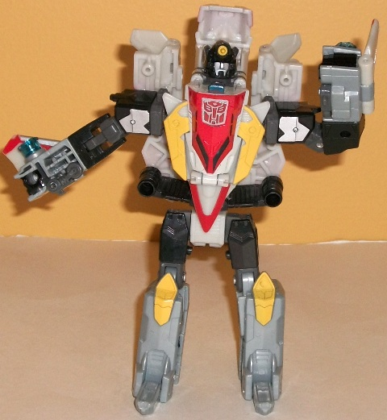
Size
: Deluxe
Difficulty of Transformation
: Medium
Color Scheme
: Pale milky off-white,
black, light red, light milky bluish gray, and some transparent dark blue,
metallic gunmetal gray, silver, dark gray, and yellow
Rating
: 7.4
Silverbolt's color scheme
is reminiscient of his G1 version without being a slavish homage-- it's
mostly milky off-white with some black and red, though there's a bit more
of the other colors and less white. I rather like it this way, as the increased
amount of red stripes in vehicle mode really makes it stand out more--
the red-silver stripes on the wings are particularly good-looking. The
bits of bluish gray plastic-- more visible in robot mode than jet mode--
add a bit more variance to the mix, but it's not used that often. The same
goes for the yellow. All in all, it's a pretty standard Autobot color scheme,
but there's enough paint apps to keep it from getting too dull.
No mold changes have
been made to RotF Silverbolt-- however, the mold quality is noticeably
degraded from its previous use. Parts like the nosecone and the small black-and-white
hinges near the rear of said nosecone can come off the figure pretty easily,
which is obviously rather annoying. He also has the same misassembled legs
that Storm Jet had that prevent him from moving his legs much at the knees
(directions to fix this problem can be found in the Energon Storm Jet review,
linked to above.)
Silverbolt is kind of
interesting, being basically a "reverse" of the colors on the mold's original
release as Energon Storm Jet-- instead of mostly red with white, he's mostly
white with some red. It all looks pretty good together, though, and the
acccent colors serve their purpose. I'd normally put him on the same level
in terms of colors with Storm Jet, but the mold degradation problems make
him a step below Energon Storm Jet, overall.
 Superion
(Combined Form)
Superion
(Combined Form)
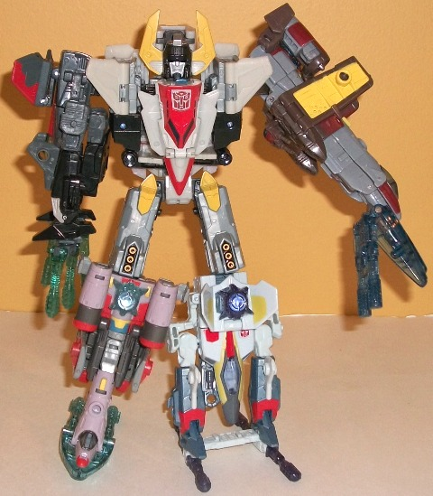
Difficulty of Transformation
: Hard
Rating
: 7.2
The color schemes of the individual Aerialbots were certainly designed to look better together this time compared with Energon Superion Maximus. Pretty much all of the colors complement each other, and it looks less like five seperate toys and more like one robot, at least if you go by the colors. The only exception is Skydive, whose pink just... eh. I've already made clear my feelings about it above. The color scheme otherwise is most definitely "Autobot-y", being mostly varioous shades of red, black/gray, and white, but without every individual 'bot having the exact same color scheme, to mix it up a little. One thing I do NOT like about this one compared to the original version, however, is that the clear "Energon" parts for each individual 'bot are different. Given that their color schemes are relatively complementary, to have just rather random colors for the clear plastic that aren't all the same seems... odd. Also, due to Silverbolt's QA issues, Superion doesn't hold together quite as well around the chest as one would like, and that was already a weakness in the FIRST iteration of the mold, so he's not the most stable of gestalts.
The RotF Superion set is a pretty good deal for your money, being only $30 U.S, and the limbs, at least, are pretty good mold. There are some QA issues with this toy that the original didn't have, both in terms of sloppiness of paint apps and of general durability, though, so keep that in mind. If you don't have these molds, or if you just love combiners, this is a definite pickup, though the other Target Exclusive combiner repaint set released for RotF is better.
Reviews by Beastbot